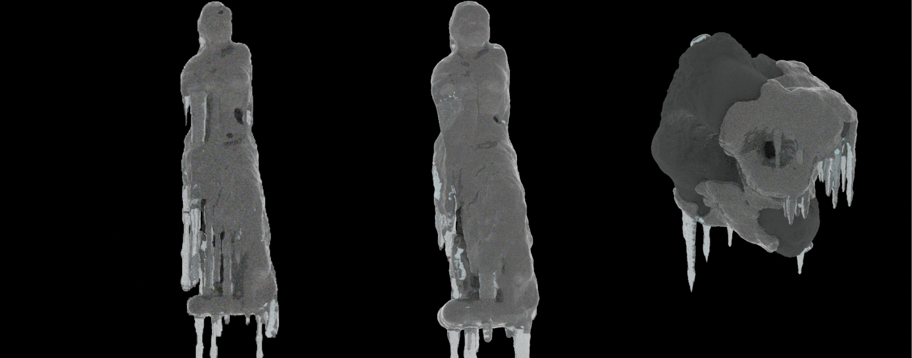

About
An ice & icicle generator built in Houdini.
The icicle grows and simulates corresponding to the original mesh. Adjustable parameters include birth rate (seeds for spawning), growth speed (length), thickness, shape, and ice coverage.
Houdini
Simulation
HDA

